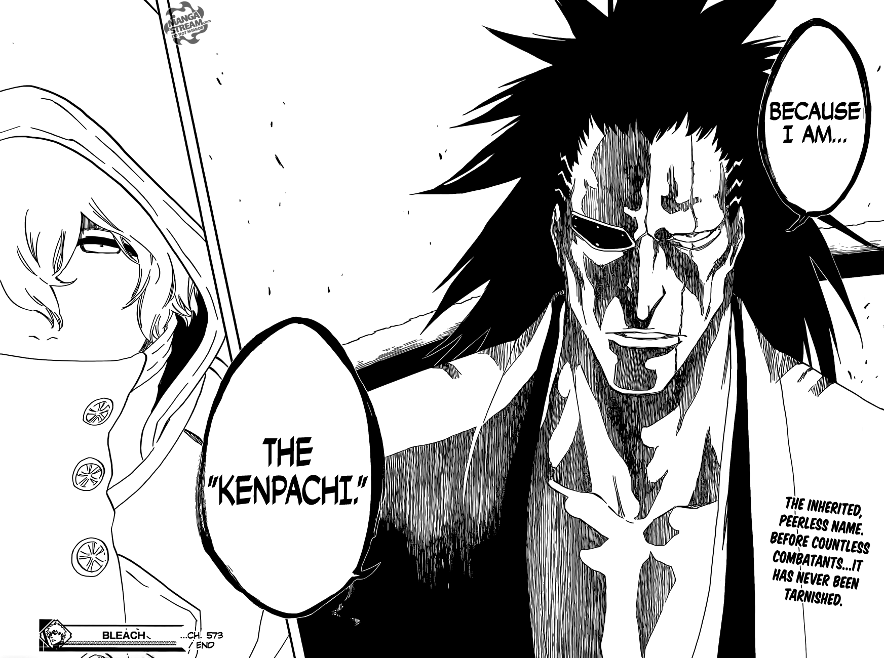

WHY YOU SHOULD WATCH BLEACH!
FAST FACTS
AUTHOR IS TITE KUBO
ONE OF THE BIG THREE OF SHONEN JUMP
130 MILLION COPIES SOLD!
AUTHOR IS TITE KUBO
ONE OF THE BIG THREE OF SHONEN JUMP
130 MILLION COPIES SOLD!
Ichigo Kurosaki is a teenager from Karakura Town who can see ghosts, a talent allowing him to meet a supernatural human Rukia Kuchiki, who enters the town in search of a Hollow, a kind of monstrous lost soul who can harm both ghosts and humans. Rukia is one of the Soul Reapers (死神, Shinigami, literally 'Death Gods'), soldiers trusted with ushering the souls of the dead from the World of the Living to the Soul Society, the afterlife realm from which she originates and with fighting Hollows. When she is severely wounded defending Ichigo from a Hollow she pursues, Rukia transfers her powers to Ichigo, so he may fight in her stead while she recovers her strength. Rukia is thereby trapped in an ordinary human body, and must advise Ichigo as he balances the demands of his substitute Soul Reaper duties and attending high school. For aid in hunting the Hollows, the pair ally with a trio of other spiritually empowered allies: Ichigo's high school classmate Orihime Inoue, best friend Yasutora "Chad" Sado and Uryū Ishida, a Quincy classmate with the ability to control spiritual particles.
BECAUSE ITS THE BEST!
NEED I SAY MORE?
YES?
LISTEN TO THESE FIRE SOUNDTRACKS